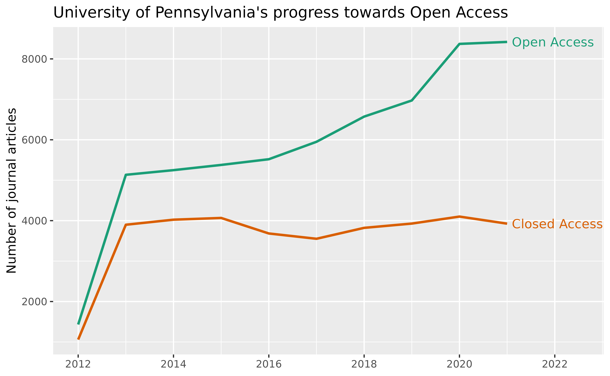

Following the template in OpenAlex’s oa-percentage tutorial, this vignette uses openalexR to answer:
How many of recent journal articles from the University of Pennsylvania are open access? And how many aren’t?
We first need to find the openalex.id
for University of Pennsylvania. We can do this by fetching for the
institutions entity and put “University of
Pennsylvania” in display_name or
display_name.search:
oa_fetch(
entity = "inst", # same as "institutions"
display_name.search = "\"University of Pennsylvania\""
) %>%
select(display_name, ror) %>%
knitr::kable()| display_name | ror |
|---|---|
| University of Pennsylvania | https://ror.org/00b30xv10 |
| California University of Pennsylvania | https://ror.org/01spssf70 |
| Hospital of the University of Pennsylvania | https://ror.org/02917wp91 |
| University of Pennsylvania Health System | https://ror.org/04h81rw26 |
| Indiana University of Pennsylvania | https://ror.org/0511cmw96 |
| Cheyney University of Pennsylvania | https://ror.org/02nckwn80 |
| University of Pennsylvania Press | https://ror.org/03xwa9562 |
We will use the first ror, 00b30xv10, as one of the filters for our query.
Alternatively, we could go to the autocomplete endpoint at https://explore.openalex.org/ to search for “University of Pennsylvania” and find the ror there!
All other filters are straightforward and explained in detailed in
the original jupyter notebook tutorial.
The only difference here is that, instead of grouping by
is_oa, we’re interested in the “trend” over the years, so
we’re going to group by publication_year, and perform the
query twice, one for is_oa = "true" and one for
is_oa = "false" .
open_access <- oa_fetch(
entity = "works",
institutions.ror = "00b30xv10",
type = "article",
from_publication_date = "2012-08-24",
is_paratext = "false",
is_oa = "true",
group_by = "publication_year"
)
closed_access <- oa_fetch(
entity = "works",
institutions.ror = "00b30xv10",
type = "article",
from_publication_date = "2012-08-24",
is_paratext = "false",
is_oa = "false",
group_by = "publication_year"
)
uf_df <- closed_access %>%
select(- key_display_name) %>%
full_join(open_access, by = "key", suffix = c("_ca", "_oa"))
uf_df
#> key count_ca key_display_name count_oa
#> 1 2012 1059 2012 1432
#> 2 2013 3899 2013 5134
#> 3 2014 4024 2014 5249
#> 4 2015 4067 2015 5378
#> 5 2016 3683 2016 5519
#> 6 2017 3552 2017 5950
#> 7 2018 3822 2018 6573
#> 8 2019 3928 2019 6972
#> 9 2020 4101 2020 8371
#> 10 2021 3926 2021 8420
#> 11 2022 3664 2022 7965
#> 12 2023 4249 2023 7436
#> 13 2024 4519 2024 4313
#> 14 2025 1 <NA> NAFinally, we compare the number of open vs. closed access articles over the years:
uf_df %>%
filter(key <= 2021) %>% # we do not yet have complete data for 2022 and after
pivot_longer(cols = starts_with("count")) %>%
mutate(
year = as.integer(key),
is_oa = recode(
name,
"count_ca" = "Closed Access",
"count_oa" = "Open Access"
),
label = if_else(key < 2021, NA_character_, is_oa)
) %>%
select(year, value, is_oa, label) %>%
ggplot(aes(x = year, y = value, group = is_oa, color = is_oa)) +
geom_line(size = 1) +
labs(
title = "University of Pennsylvania's progress towards Open Access",
x = NULL, y = "Number of journal articles") +
scale_color_brewer(palette = "Dark2", direction = -1) +
scale_x_continuous(breaks = seq(2010, 2024, 2)) +
geom_text(aes(label = label), nudge_x = 0.1, hjust = 0) +
coord_cartesian(xlim = c(NA, 2022.5)) +
guides(color = "none")